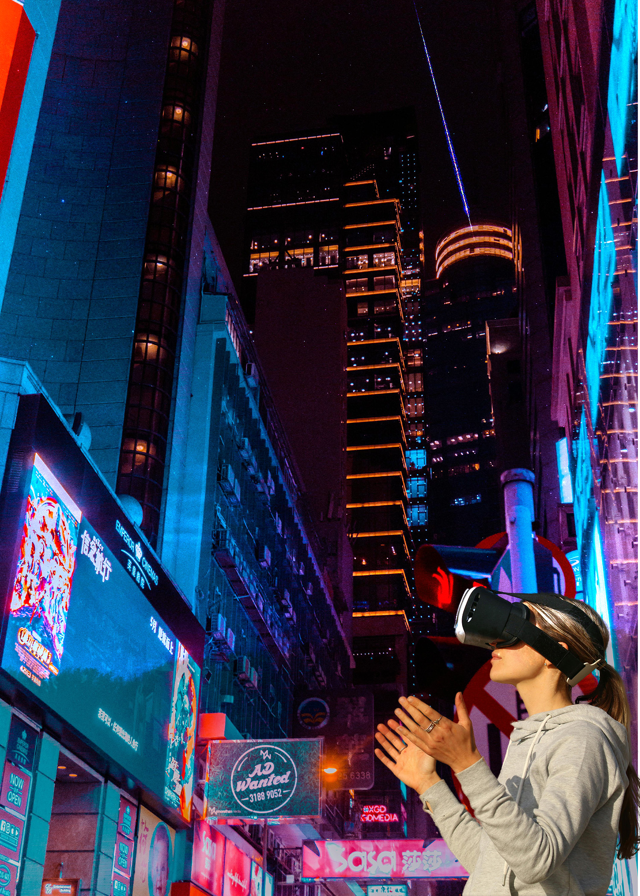
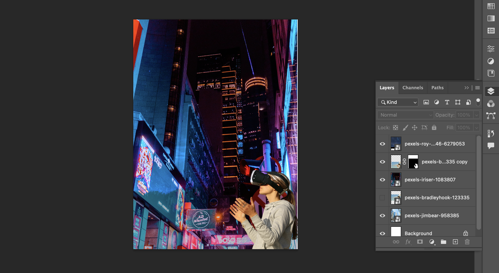

For the first montage picture, I used the screen blending mode because it can make the scene of the entire photo look closer to nature. The theme I want to express is the harmonious coexistence of humans and nature.
 For the second montage picture, I also use the screen blending mode because the character in the picture wear a high-tech glasses, use this blending mode make the city more technological, the theme I want to express is rapidly developing cities.
Go to Homepage